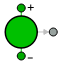
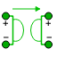
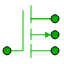
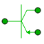
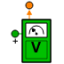

| Symbol | Name | Description |
| CCCS [+] | Linear current-controlled current source | |
| CCVS [+] | Linear current-controlled voltage source | |
| Capacitor [+] | Electrical Capacitor | |
| Conductor [+] | Electrical Conductor | |
| ControlledIdealCommutingSwitch [+] | Ideal commuting switch | |
| ControlledIdealSwitch [+] | Controlled Ideal Switch | |
| CoupledInductor [+] | Coupled inductors | |
| CurrentConstant [+] | Source for constant Current | |
| CurrentSignal [+] | Generic Current source using the input signal as source Current | |
| CurrentSine [+] | Sine Current source | |
| Diode [+] | Semiconductor diode | |
|  | EMF [+] | Electromotive force (electric/mechanic transformer) |
| ExpSine [+] | Control component to generate exponentially damped sine signals | |
| Ground [+] | Ground of an electrical circuit | |
|  | Gyrator [+] | Gyrator |
| IdealDiode [+] | Ideal electrical diode | |
| IdealGTOThyristor [+] | Ideal GTO thyristor | |
| IdealOpAmp [+] | Ideal Operational Amplifier | |
| IdealOpAmp3Pin [+] | Ideal Operational Amplifier with 3 pins | |
| IdealSwitch [+] | Ideal electrical switch | |
| IdealThyristor [+] | Ideal thyristor | |
| IdealTransformer [+] | Ideal electrical transformer | |
| Inductor [+] | Inductor | |
| Line_LRCG [+] | Lossy Transmission Line | |
| Line_RC [+] | Uniform Distributed RC Line | |
| NMOS [+] | Simple MOS Transistor | |
| NPN [+] | Bipolar NPN Junction Transistor component | |
|  | PMOS [+] | Simple MOS Transistor |
|  | PNP [+] | Bipolar PNP Junction Transistor component |
| Ramp [+] | Control component to generate ramp signals | |
| Resistor [+] | Resistor | |
| SensorCurrent [+] | Sensor to measure the current in a branch | |
|  | SensorPotential [+] | Sensor to measure the potential in point |
| SensorVoltage [+] | Sensor to measure the voltage between two pins | |
| Short [+] | Short cut branch | |
| Sine [+] | Control component to generate sine signals | |
| Trapezoid [+] | Control component to generate trapezoidal signals of type Real | |
| VCCS [+] | Linear voltage-controlled current source | |
| VCVS [+] | Linear voltage-controlled voltage source | |
| VoltageConstant [+] | Source for constant voltage | |
| VoltageSignal [+] | Generic voltage source using the input signal as source voltage | |
| VoltageSine [+] | Sine Voltage Source |
Document generated automatically (Date: 2019:01:23, Time: 00:19:10)